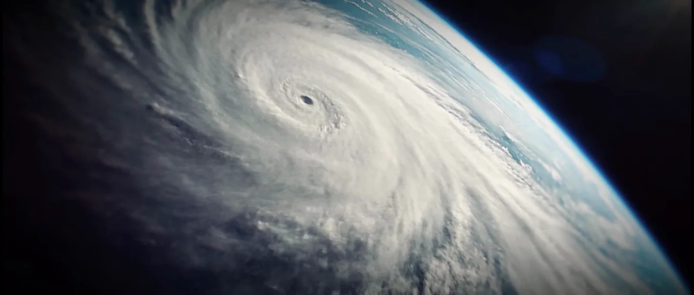
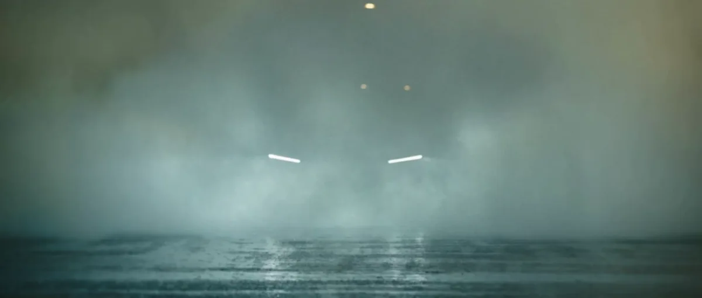
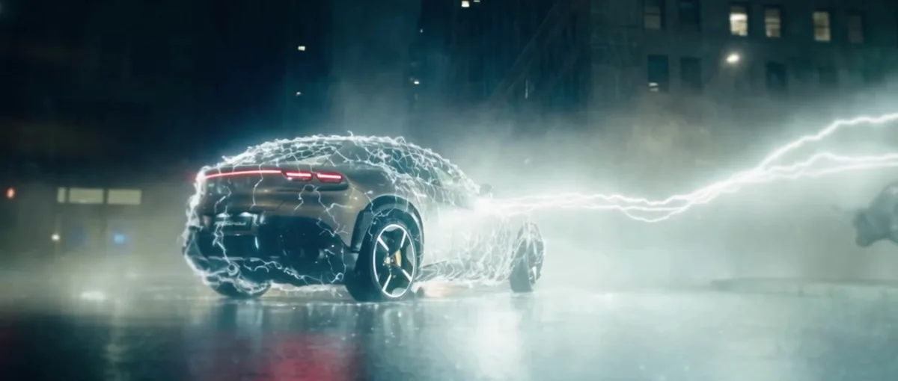
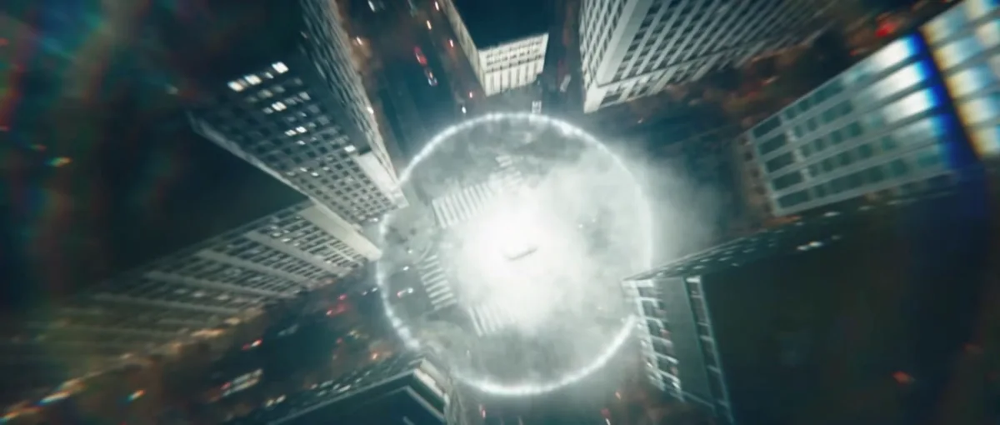
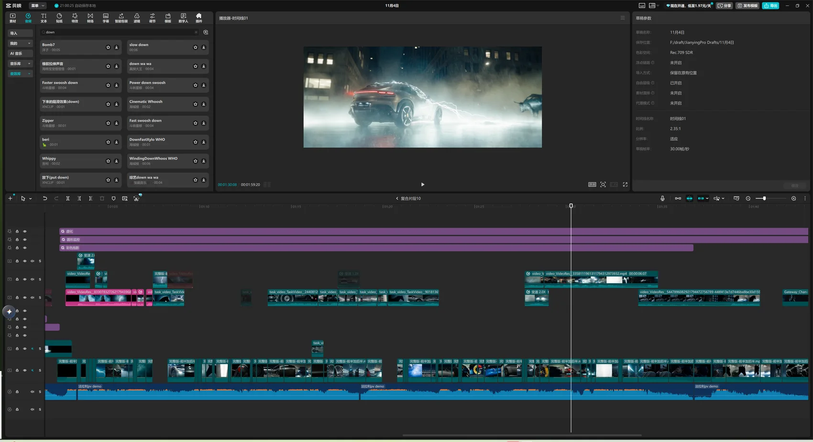

跳到正文
Back
Résumé
About
Work
Contact
ZH
EN
法拉利pv概念短片
个人 AIGC 创作
播放
02:00
请启用 JavaScript 播放视频。
镜头索引
00:02
风暴
00:23
唤醒
00:32
装配
01:00
启动
01:30
疾驰
01:38
余韵

01 / 06
播放片段
02 / 06
播放片段
03 / 06
播放片段
04 / 06
播放片段
05 / 06
播放片段
06 / 06
播放片段
电流分镜
5.6 s 预演

00.00 s
穿雾

02.53 s
电弧

03.00 s
扩散
04.10 s
入云
制作资料
车型参考 01
车型参考 02

剪辑时间线
← 上一个
《和平》番剧修脸
下一个 →
一镜到底 · 微距长镜头
← / →